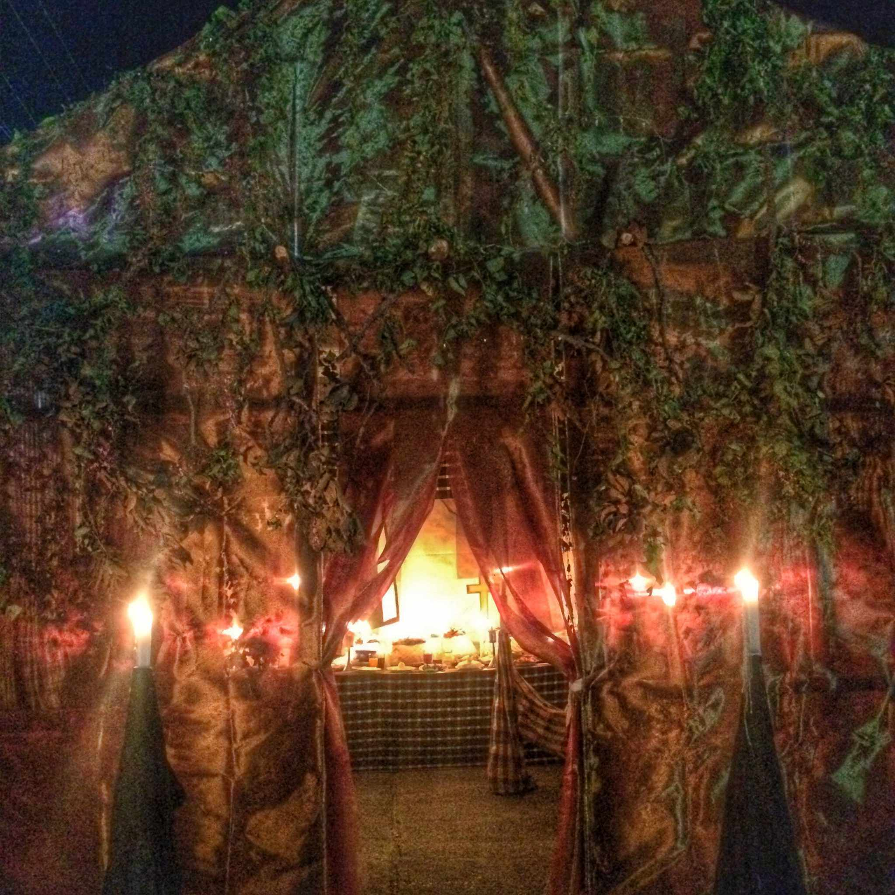

|  | Tumba is a cultural tradition of the town of Paoay in Ilocos Norte. It is a halloween activity which usually take place on the first of November. This is their own way of paying tribute to the spirits of the dead. Last year, I, my friends and some guests from Manila witnessed this celebration. Tumba refers to catafalque. It is a raised bier or platform that is used as support to casket or coffin or body of the deceased during a funeral service. This is often movable. It may also refer to a tomb or altar. In this town, they put the umras or offerings in the tumba |